Introduction To ggplot2
Hands-On Excercises
Roy Francis
13-Jun-2018

This is the hands-on material for Introduction to ggplot2. These are series of excercises to help you get started and familiarise yourself with ggplot2 syntax, plot building logic and fine modification of plots. The code is hidden by default. Click on the ‘Code’ button on the right side to show the code.
Practice using the Basics section. Then try to do the challenges yourself. There are two challenge plots: a scatterplot and a heatmap.

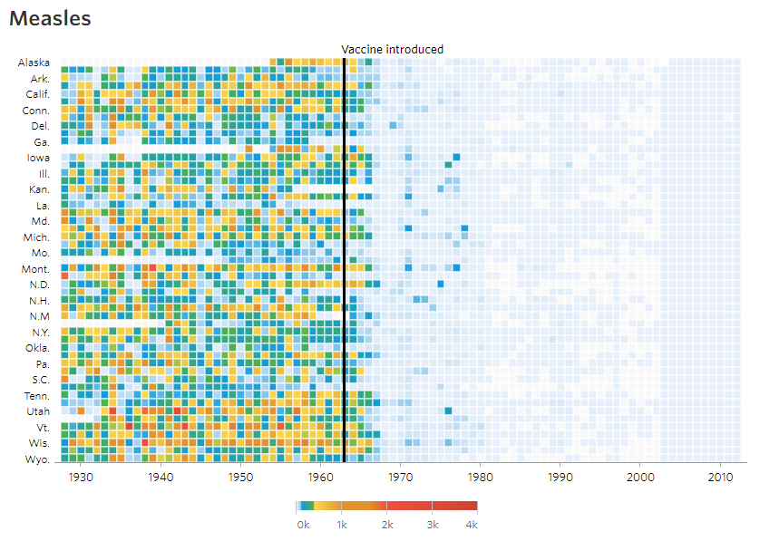
1 Basics
First step is to make sure that ggplot2 is installed and the package is loaded.
library(ggplot2)We use the iris data to get started. This dataset has four continuous variables and one categorical variable. It is important to remember about the data type when plotting graphs.
data("iris")
head(iris)1.1 Building a plot
ggplot2 plots are initialised by specifying the dataset. This can be saved to a variable or it draws a blank plot.
ggplot(data=iris)Now we can specify what we want on the x and y axes using aethetic mapping. And we specify the geometric using geoms. Note that the variable names do not have double quotes "" like in base plots.
ggplot(data=iris)+
geom_point(mapping=aes(x=Petal.Length,y=Petal.Width))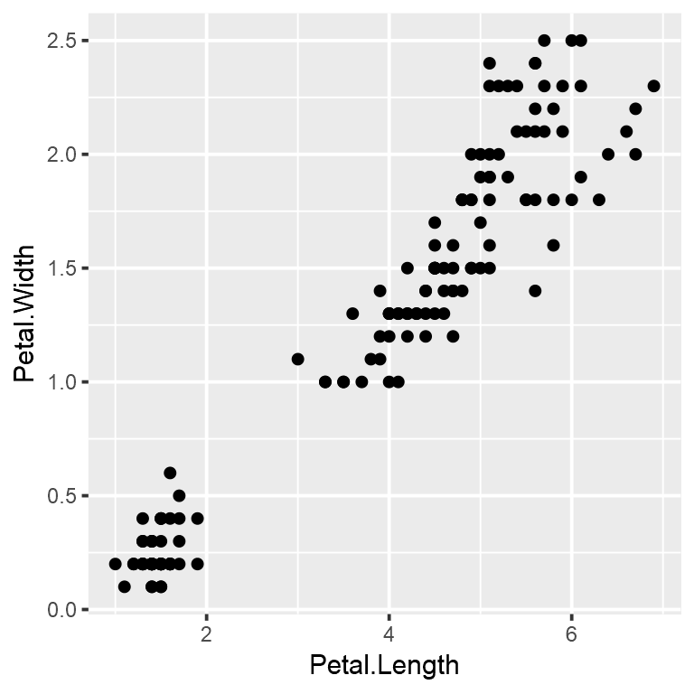
1.2 Multiple geoms
Further geoms can be added. For example let’s add a regression line. When multiple geoms with the same aesthetics are used, they can be specified as a common mapping. Note that the order in which geoms are plotted depends on the order in which the geoms are supplied in the code. In the code below, the points are plotted first and then the regression line.
ggplot(data=iris,mapping=aes(x=Petal.Length,y=Petal.Width))+
geom_point()+
geom_smooth(method="lm")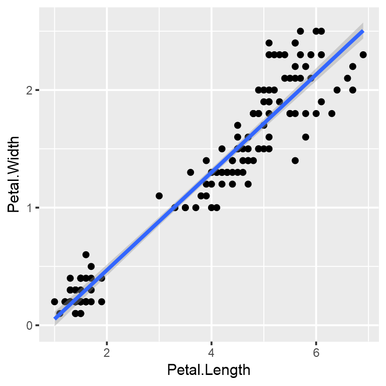
1.3 Using colors
We can use the categorical column Species to color the points. The color aesthetic is used by geom_point and geom_smooth. Three different regression lines are now drawn. Notice that a legend is automatically created.
ggplot(data=iris,mapping=aes(x=Petal.Length,y=Petal.Width,color=Species))+
geom_point()+
geom_smooth(method="lm")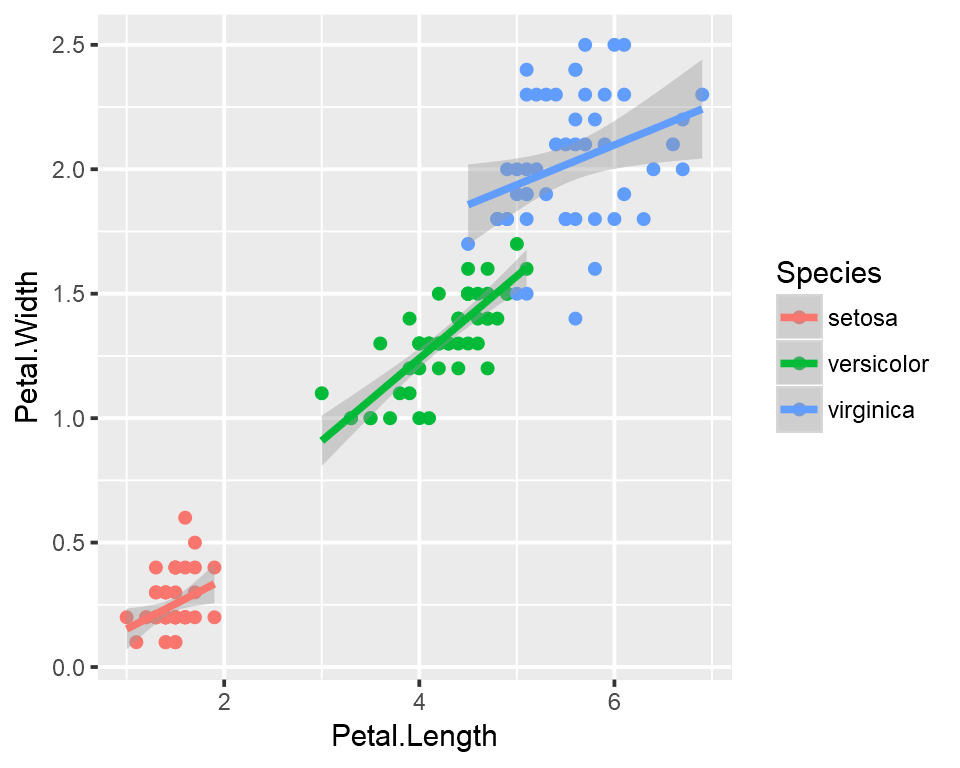
If we wanted to keep a common regression line while keeping the colors for the points, we could specify color aesthetic only for geom_point.
ggplot(data=iris,mapping=aes(x=Petal.Length,y=Petal.Width))+
geom_point(aes(color=Species))+
geom_smooth(method="lm")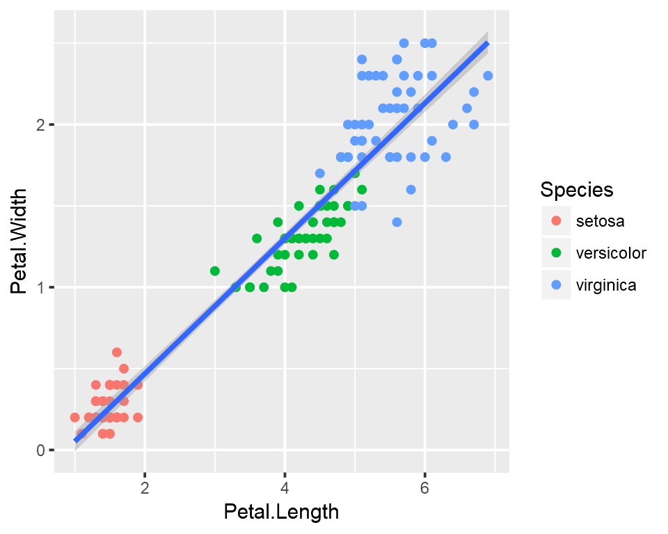
1.4 Aesthetic parameter
We can change the size of all points by a fixed amount by specifying size outside the aesthetic parameter.
ggplot(data=iris,mapping=aes(x=Petal.Length,y=Petal.Width))+
geom_point(aes(color=Species),size=3)+
geom_smooth(method="lm")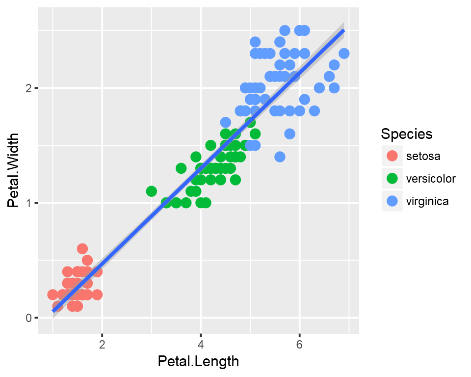
1.5 Aesthetic mapping
We can map another variable as size of the points. This is done by specifying size inside the aesthetic mapping. Now the size of the points denote Sepal.Width. A new legend group is created to show this new aesthetic.
ggplot(data=iris,mapping=aes(x=Petal.Length,y=Petal.Width))+
geom_point(aes(color=Species,size=Sepal.Width))+
geom_smooth(method="lm")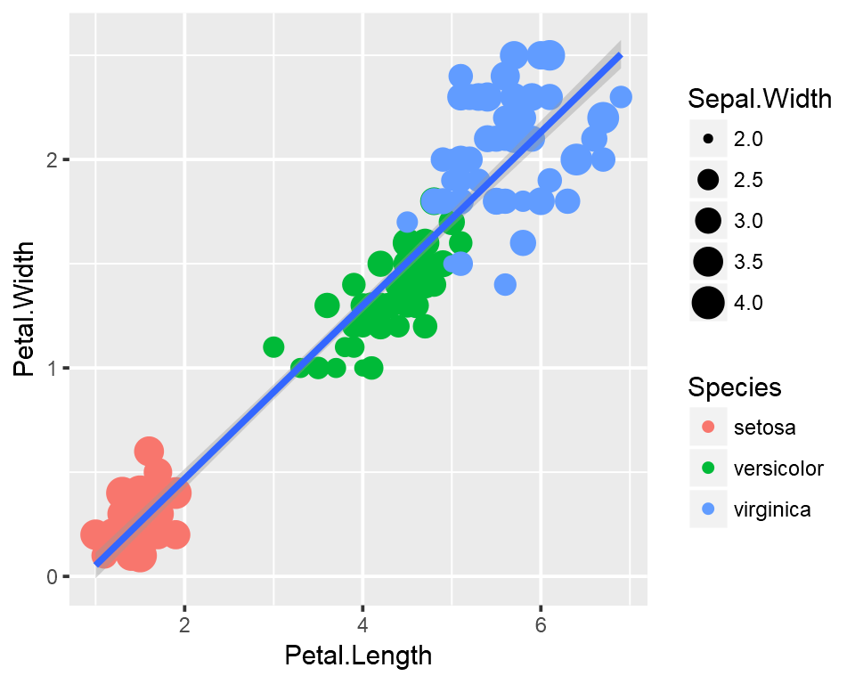
1.6 Discrete colors
We can change the default colors by specifying new values inside a scale.
ggplot(data=iris,mapping=aes(x=Petal.Length,y=Petal.Width))+
geom_point(aes(color=Species,size=Sepal.Width))+
geom_smooth(method="lm")+
scale_color_manual(values=c("red","blue","green"))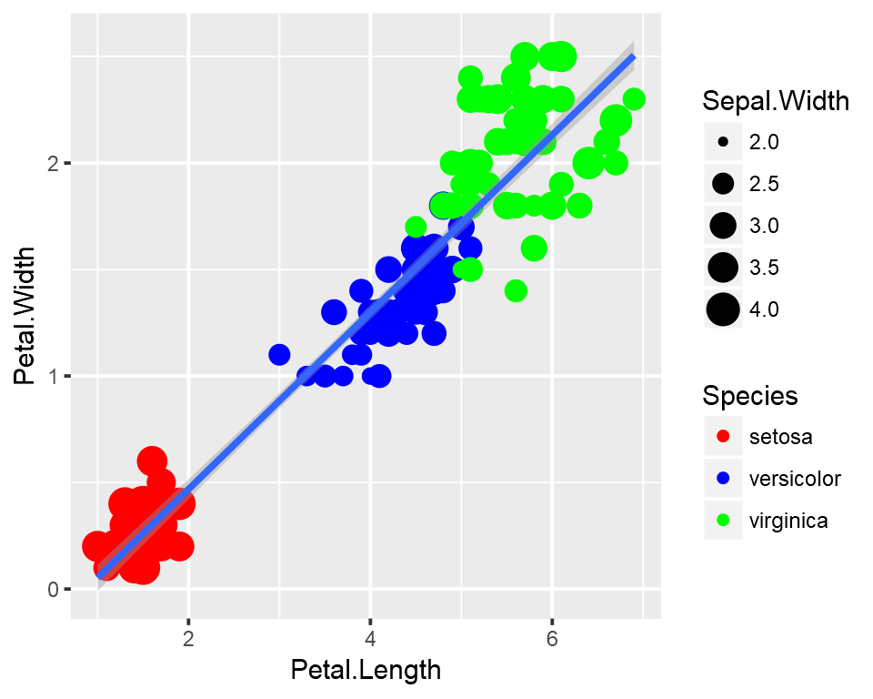
1.7 Continuous colors
We can also map the colors to a continuous variable. This creates a color bar legend item.
ggplot(data=iris,mapping=aes(x=Petal.Length,y=Petal.Width))+
geom_point(aes(color=Sepal.Width))+
geom_smooth(method="lm")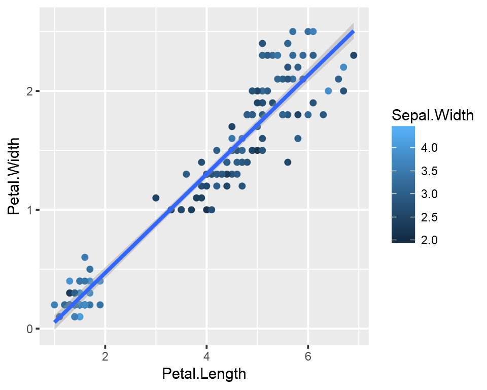
1.8 Titles
Now let’s rename the axis labels, change the legend title and add a title, a subtitle and a caption. We change the legend title using scale_color_continuous(). All other labels are changed using labs().
ggplot(data=iris,mapping=aes(x=Petal.Length,y=Petal.Width))+
geom_point(aes(color=Sepal.Width))+
geom_smooth(method="lm")+
scale_color_continuous(name="New Legend Title")+
labs(title="This Is A Title",subtitle="This is a subtitle",x=" Petal Length",
y="Petal Width", caption="This is a little caption.")1.9 Axes modification
Let’s say we are not happy with the x-axis breaks 2,4,6 etc. We would like to have 1,2,3… We change this using scale_x_continuous().
ggplot(data=iris,mapping=aes(x=Petal.Length,y=Petal.Width))+
geom_point(aes(color=Sepal.Width))+
geom_smooth(method="lm")+
scale_color_continuous(name="New Legend Title")+
scale_x_continuous(breaks=1:8)+
labs(title="This Is A Title",subtitle="This is a subtitle",x=" Petal Length",
y="Petal Width", caption="This is a little caption.")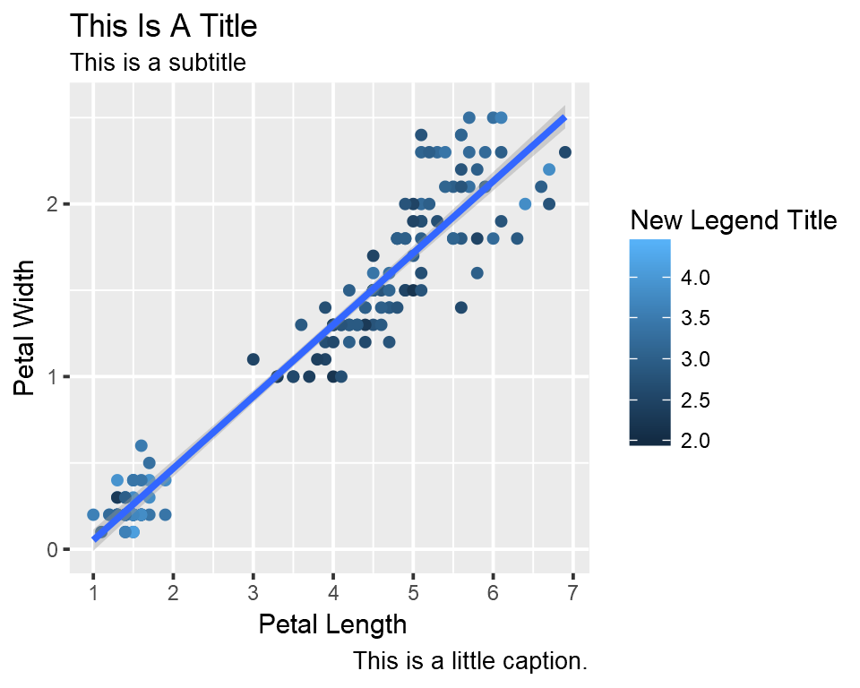
1.10 Facetting
We can create subplots using the facetting functionality. Let’s create three subplots for the three levels of Species.
ggplot(data=iris,mapping=aes(x=Petal.Length,y=Petal.Width))+
geom_point(aes(color=Sepal.Width))+
geom_smooth(method="lm")+
scale_color_continuous(name="New Legend Title")+
scale_x_continuous(breaks=1:8)+
labs(title="This Is A Title",subtitle="This is a subtitle",x=" Petal Length",
y="Petal Width", caption="This is a little caption.")+
facet_wrap(~Species)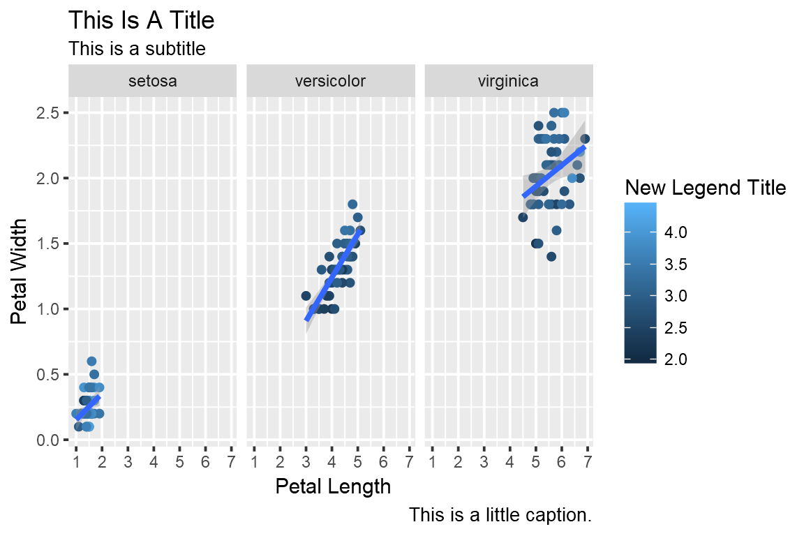
1.11 Themes
The look of the plot can be changed using themes. Let’s can the default theme_grey() to theme_bw().
ggplot(data=iris,mapping=aes(x=Petal.Length,y=Petal.Width))+
geom_point(aes(color=Sepal.Width))+
geom_smooth(method="lm")+
scale_color_continuous(name="New Legend Title")+
scale_x_continuous(breaks=1:8)+
labs(title="This Is A Title",subtitle="This is a subtitle",x=" Petal Length",
y="Petal Width", caption="This is a little caption.")+
facet_wrap(~Species)+
theme_bw()All non-data related aspects of the plot can be modified through themes. Let’s modify the colors of the title labels and turn off the gridlines. The various parameters for theme ca be found using ?theme.
ggplot(data=iris,mapping=aes(x=Petal.Length,y=Petal.Width))+
geom_point(aes(color=Sepal.Width))+
geom_smooth(method="lm")+
scale_color_continuous(name="New Legend Title")+
scale_x_continuous(breaks=1:8)+
labs(title="This Is A Title",subtitle="This is a subtitle",x=" Petal Length",
y="Petal Width", caption="This is a little caption.")+
facet_wrap(~Species)+
theme_bw()+
theme(
axis.title=element_text(color="Blue",face="bold"),
plot.title=element_text(color="Green",face="bold"),
plot.subtitle=element_text(color="Pink"),
panel.grid=element_blank()
)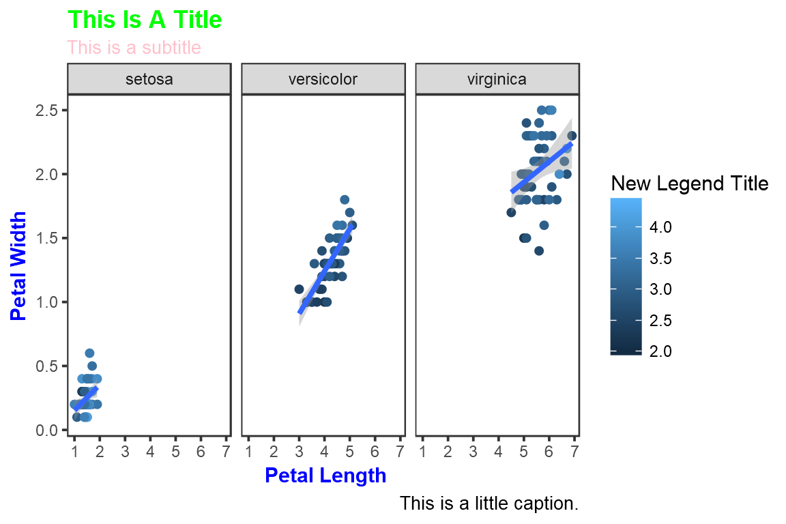
Themes can be saved and reused.
newtheme <- theme(
axis.title=element_text(color="Blue",face="bold"),
plot.title=element_text(color="Green",face="bold"),
plot.subtitle=element_text(color="Pink"),
panel.grid=element_blank())
ggplot(data=iris,mapping=aes(x=Petal.Length,y=Petal.Width))+
geom_point(aes(color=Sepal.Width))+
geom_smooth(method="lm")+
scale_color_continuous(name="New Legend Title")+
scale_x_continuous(breaks=1:8)+
labs(title="This Is A Title",subtitle="This is a subtitle",x=" Petal Length",
y="Petal Width", caption="This is a little caption.")+
facet_wrap(~Species)+
theme_bw()+
newtheme1.12 Controlling legends
Here we see two legends based on the two aesthetic mappings.
ggplot(data=iris,mapping=aes(x=Petal.Length,y=Petal.Width))+
geom_point(aes(color=Species,size=Sepal.Width))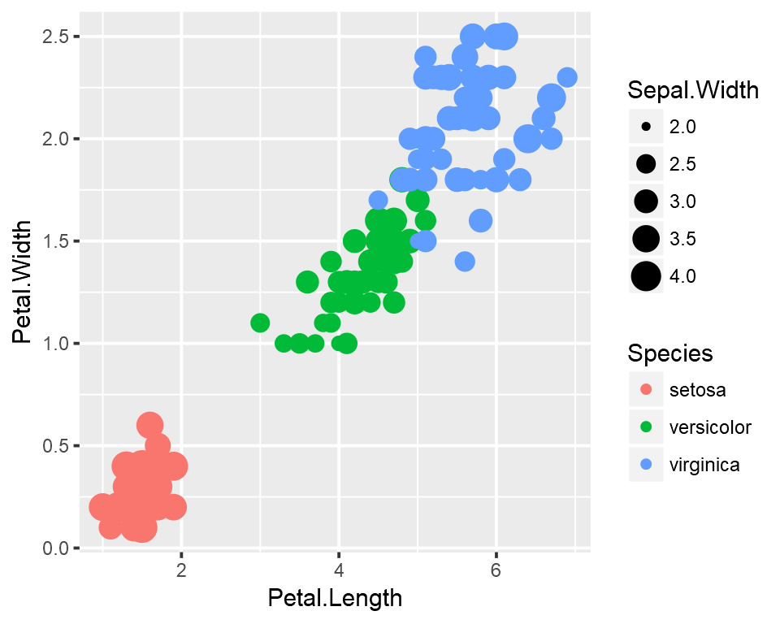
If we don’t want to have the extra legend, we can turn off legends individually by aesthetic.
ggplot(data=iris,mapping=aes(x=Petal.Length,y=Petal.Width))+
geom_point(aes(color=Species,size=Sepal.Width))+
guides(size="none")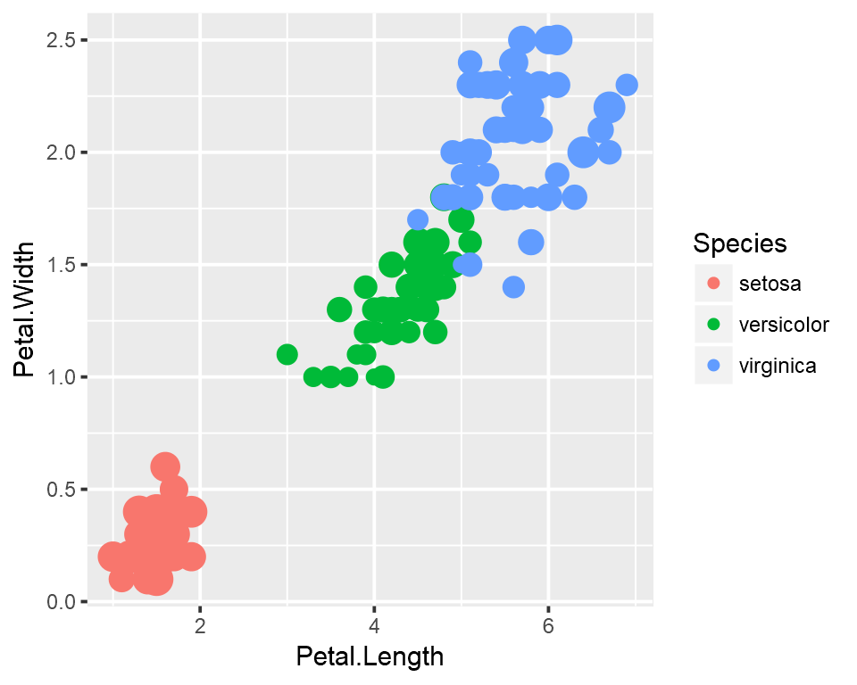
We can also turn off legends by geom.
ggplot(data=iris,mapping=aes(x=Petal.Length,y=Petal.Width))+
geom_point(aes(color=Species,size=Sepal.Width),show.legend=FALSE)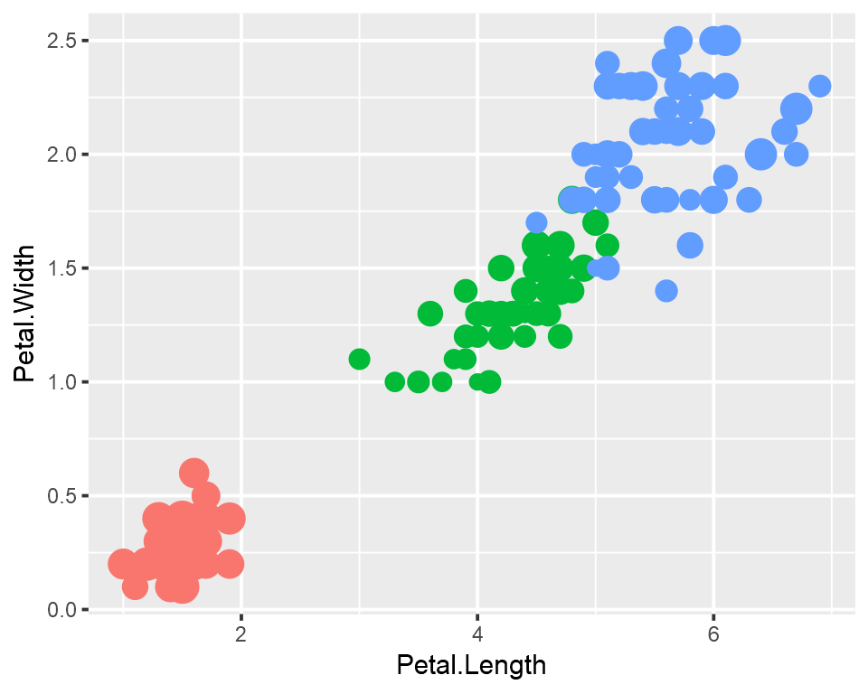
Legends can be moved around using theme.
ggplot(data=iris,mapping=aes(x=Petal.Length,y=Petal.Width))+
geom_point(aes(color=Species,size=Sepal.Width))+
theme(legend.position="top",
legend.justification="right")
Legend rows can be controlled in a finer manner.
ggplot(data=iris,mapping=aes(x=Petal.Length,y=Petal.Width))+
geom_point(aes(color=Species,size=Sepal.Width))+
guides(size=guide_legend(nrow=2,byrow=TRUE),
color=guide_legend(nrow=3,byrow=T))+
theme(legend.position="top",
legend.justification="right")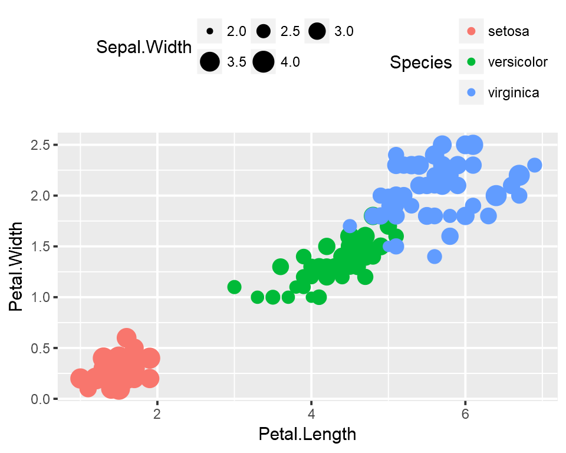
1.13 Labelling
Items on the plot can be labelled using the geom_text or geom_label geoms.
ggplot(data=iris,mapping=aes(x=Petal.Length,y=Petal.Width))+
geom_point(aes(color=Species))+
geom_text(aes(label=Species,hjust=0),nudge_x=0.5,size=3)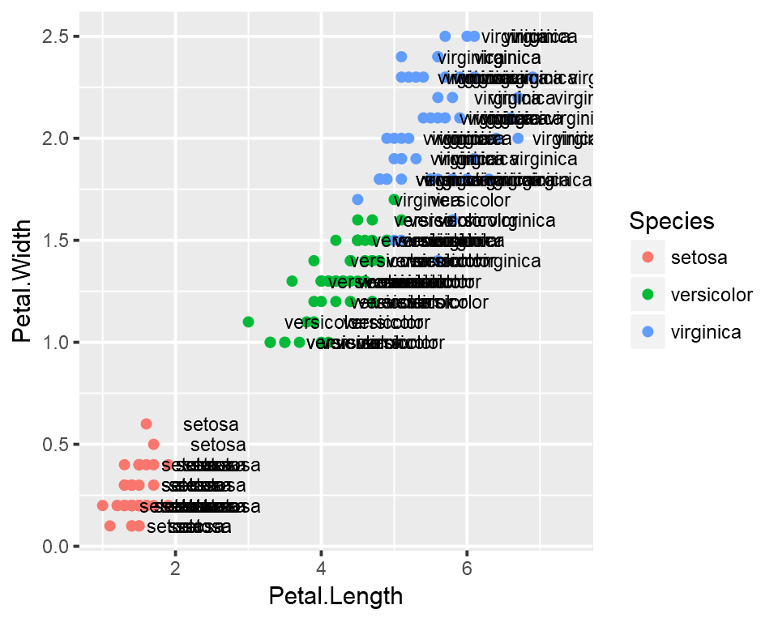
ggplot(data=iris,mapping=aes(x=Petal.Length,y=Petal.Width))+
geom_point(aes(color=Species))+
geom_label(aes(label=Species,hjust=0),nudge_x=0.5,size=3)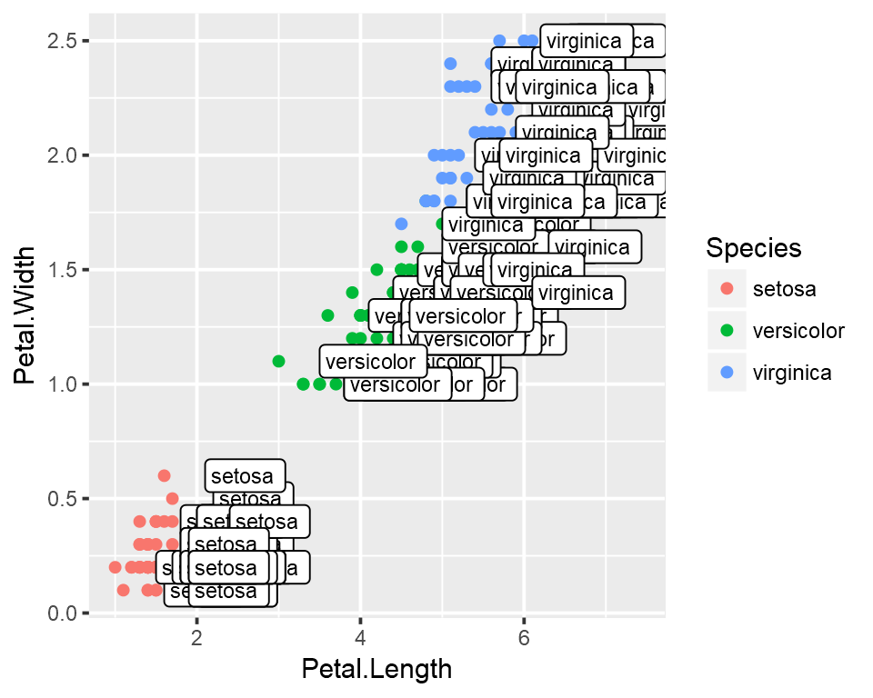
The R package ggrepel allows for non-overlapping labels.
library(ggrepel)
ggplot(data=iris,mapping=aes(x=Petal.Length,y=Petal.Width))+
geom_point(aes(color=Species))+
geom_text_repel(aes(label=Species),size=3)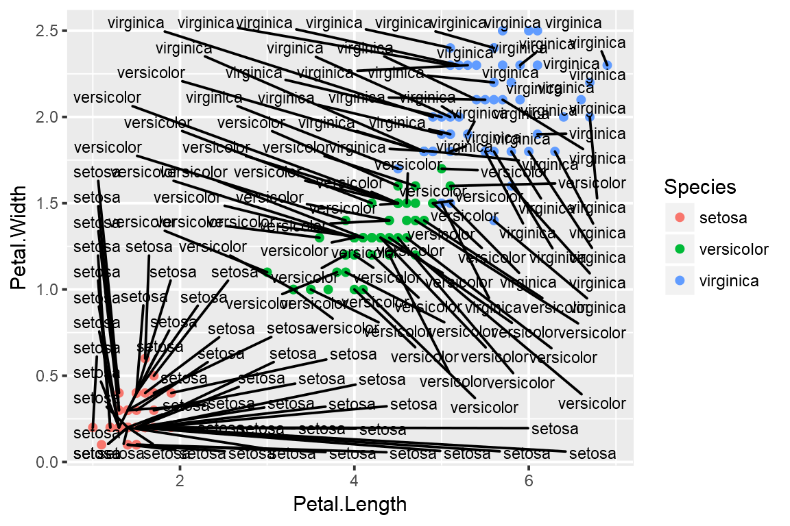
1.14 Annotations
Custom annotations of any geom can be added arbitrarly anywhere on the plot.
ggplot(data=iris,mapping=aes(x=Petal.Length,y=Petal.Width))+
geom_point(aes(color=Species))+
annotate("text",x=2.5,y=2.1,label="There is a random line here")+
annotate("segment",x=2,xend=4,y=1.5,yend=2)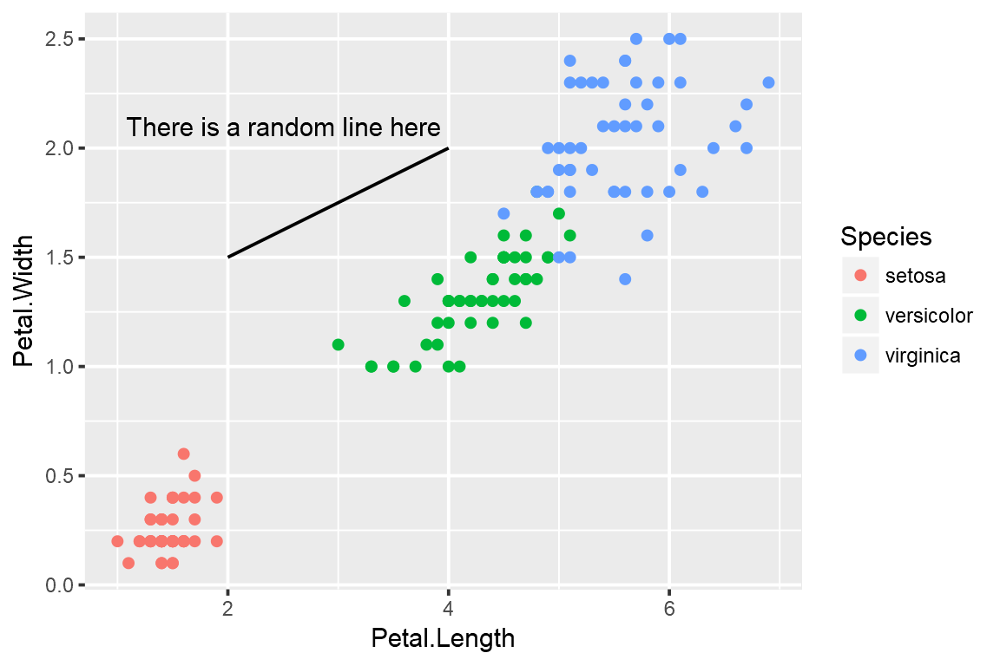
1.15 Barplots
ggplot(data=iris,mapping=aes(x=Species,y=Petal.Width))+
geom_bar(stat="identity")
1.16 Flip axes
x and y axes can be flipped using coord_flip.
ggplot(data=iris,mapping=aes(x=Species,y=Petal.Width))+
geom_bar(stat="identity")+
coord_flip()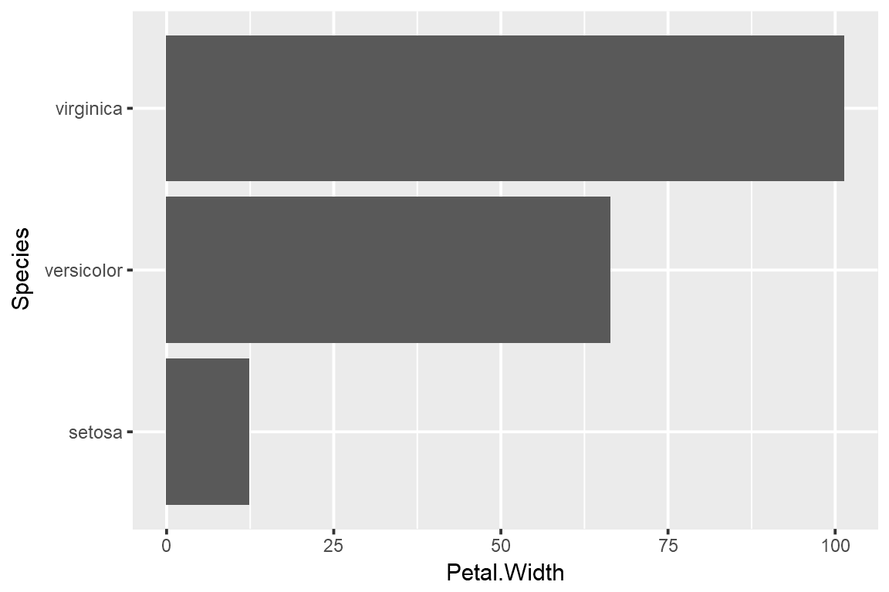
1.17 Error Bars
An example of using error bars with points. The mean and standard deviation is computed. This is used to create upper and lower bounds for the error bars.
dfr <- iris %>% group_by(Species) %>%
summarise(mean=mean(Sepal.Length),sd=sd(Sepal.Length)) %>%
mutate(high=mean+sd,low=mean-sd)
ggplot(data=dfr,mapping=aes(x=Species,y=mean,color=Species))+
geom_point(size=4)+
geom_errorbar(aes(ymax=high,ymin=low),width=0.2)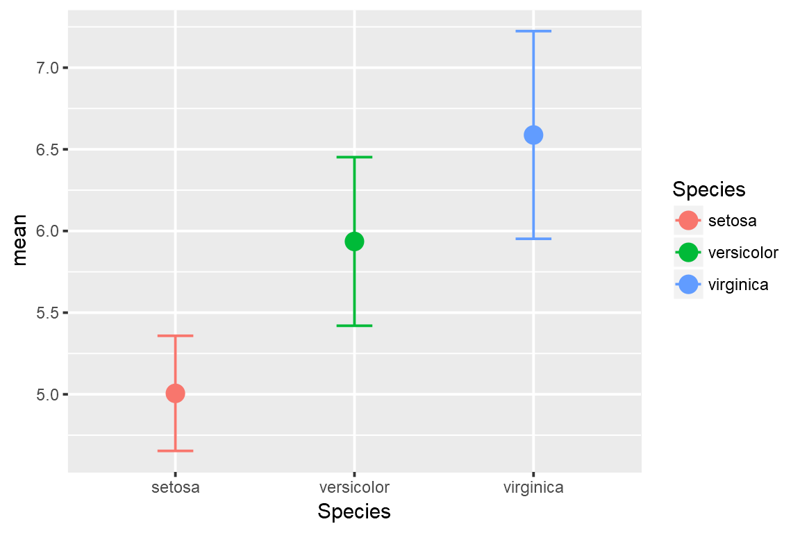
2 Economist Scatterplot
The aim of this challenge is to recreate the plot below originally published in The Economist. The graph is a scatterplot showing the relationship between Corruption Index and Human Development Index for various countries.
2.1 Data
Start by reading in the data.
ec <- read.csv("ggplot_lab_assets/data_economist.csv",header=T)
head(ec)Make sure that the fields are of the correct type. The x-axis field ‘CPI’ and the y-axis field ‘HDI’ must be of numeric type. The categorical field ‘Region’ must be of Factor type.
str(ec)## 'data.frame': 173 obs. of 6 variables:
## $ X : int 1 2 3 4 5 6 7 8 9 10 ...
## $ Country : Factor w/ 173 levels "Afghanistan",..: 1 2 3 4 5 6 7 8 9 10 ...
## $ HDI.Rank: int 172 70 96 148 45 86 2 19 91 53 ...
## $ HDI : num 0.398 0.739 0.698 0.486 0.797 0.716 0.929 0.885 0.7 0.771 ...
## $ CPI : num 1.5 3.1 2.9 2 3 2.6 8.8 7.8 2.4 7.3 ...
## $ Region : Factor w/ 6 levels "Americas","Asia Pacific",..: 2 3 5 6 1 3 2 4 3 1 ...We need to first modify the region column. The current levels in the ‘Region’ field are:
levels(ec$Region)## [1] "Americas" "Asia Pacific" "East EU Cemt Asia"
## [4] "EU W. Europe" "MENA" "SSA"But, the categories on the plot are different and need to be changed as follows:
From To
EU W. Europe OECD
Americas Americas
Asia Pacific Asia & Oceania
East EU Cemt Asia Central & Eastern Europe
MENA Middle East & North Africa
SSA Sub-Saharan AfricaSince the ‘To’ strings are a bit too long to be in one line on the legend, use \n to break a line into two lines. > \n is the newline character in R.
From To
EU W. Europe OECD
Americas Americas
Asia Pacific Asia &\nOceania
East EU Cemt Asia Central &\nEastern Europe
MENA Middle East &\nNorth Africa
SSA Sub-Saharan\nAfricaThe strings can be renamed using string replacement or substitution. But a easier way to do it is to use factor(). The arguments levels and labels in function factor() can be used to rename factors.
ec$Region <- factor(ec$Region,levels = c("EU W. Europe",
"Americas",
"Asia Pacific",
"East EU Cemt Asia",
"MENA",
"SSA"),
labels = c("OECD",
"Americas",
"Asia &\nOceania",
"Central &\nEastern Europe",
"Middle East &\nNorth Africa",
"Sub-Saharan\nAfrica"))Our new Regions should look like:
levels(ec$Region)## [1] "OECD" "Americas"
## [3] "Asia &\nOceania" "Central &\nEastern Europe"
## [5] "Middle East &\nNorth Africa" "Sub-Saharan\nAfrica"2.2 Points
Start building up the basic plot. > Provide data.frame ‘ec’ as the data and map field ‘CPI’ to the x-axis and ‘HDI’ to the y-axis. Use geom_point() to draw point geometry. To select shapes, see here. Circular shape can be drawn using 1, 16, 19, 20 and 21. Using shape ‘21’ allows us to control stroke color, fill color and stroke thickness for the points. Check out ?geom_point and look under ‘Aesthetics’ for the various possible aesthetic options. Set shape to 21, size to 3, stroke to 0.8 and fill to white.
ggplot(ec,aes(x=CPI,y=HDI,color=Region))+
geom_point(shape=21,size=3,stroke=0.8,fill="white")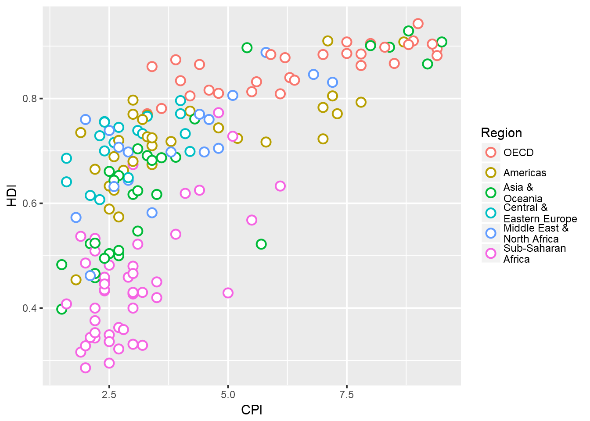
Notice how ‘’ has created newlines in the Legend.
2.3 Trendline
Now, we add the trend line using geom_smooth. Check out ?geom_smooth and look under ‘Arguments’ for argument options and ‘Aesthetics’ for the aesthetic options. > Use method ‘lm’ and use a custom formula of y~poly(x,2) to approximate the curve seen on the plot. Turn off confidence interval shading. Set line thickness to 0.6 and line color to red.
ggplot(ec,aes(x=CPI,y=HDI,color=Region))+
geom_point(shape=21,size=3,stroke=0.8,fill="white")+
geom_smooth(method="lm",formula=y~poly(x,2),se=F,size=0.6,color="red")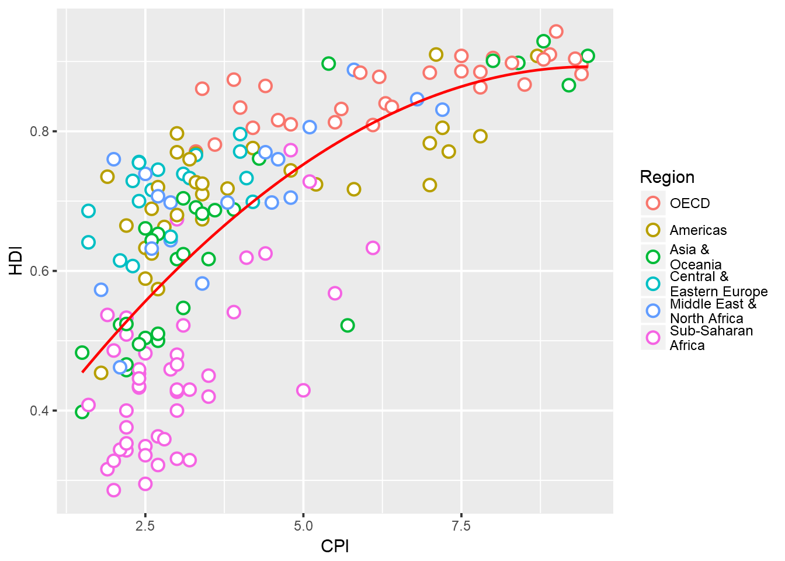
Notice that the line in drawn over the points due to the plotting order. We want the points to be over the line. So reorder the geoms. Since we provided no aesthetic mappings to geom_smooth, there is no legend entry for the trendline. We can fake a legend entry by providing an aesthetic, for example; aes(fill="red"). We do not use the color aesthetic because it is already in use and would give us reduced control later on to modify this legend entry.
p <- ggplot(ec,aes(x=CPI,y=HDI,color=Region))+
geom_smooth(aes(fill="red"),method="lm",formula=y~poly(x,2),se=F,color="red",size=0.6)+
geom_point(shape=21,size=3,stroke=0.8,fill="white")
p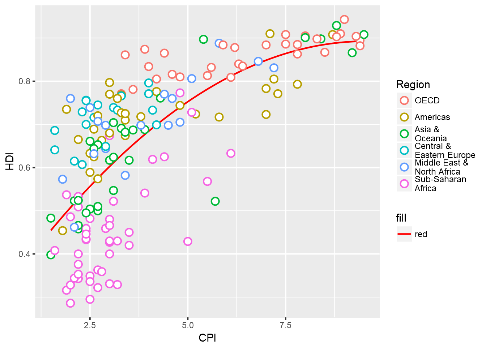
2.4 Text Labels
Now we add the text labels. Only a subset of countries are plotted. The list of countries to label is shown below.
"Congo","Afghanistan","Sudan","Myanmar","Iraq","Venezuela","Russia","Argentina","Brazil","Italy","South Africa","Cape Verde","Bhutan","Botswana","Britian","New Zealand","Greece","China","India","Rwanda","Spain","France","United States","Japan","Norway","Singapore","Barbados","Germany"Use
geom_textto subset the original data.frame to the reduced set above and plot the labels as text. See?geom_text.
labels <- c("Congo","Afghanistan","Sudan","Myanmar","Iraq","Venezuela","Russia","Argentina","Brazil","Italy","South Africa","Cape Verde","Bhutan","Botswana","Britian","New Zealand","Greece","China","India","Rwanda","Spain","France","United States","Japan","Norway","Singapore","Barbados","Germany")
p+geom_text(data=subset(ec,Country %in% labels),aes(label=Country),color="black")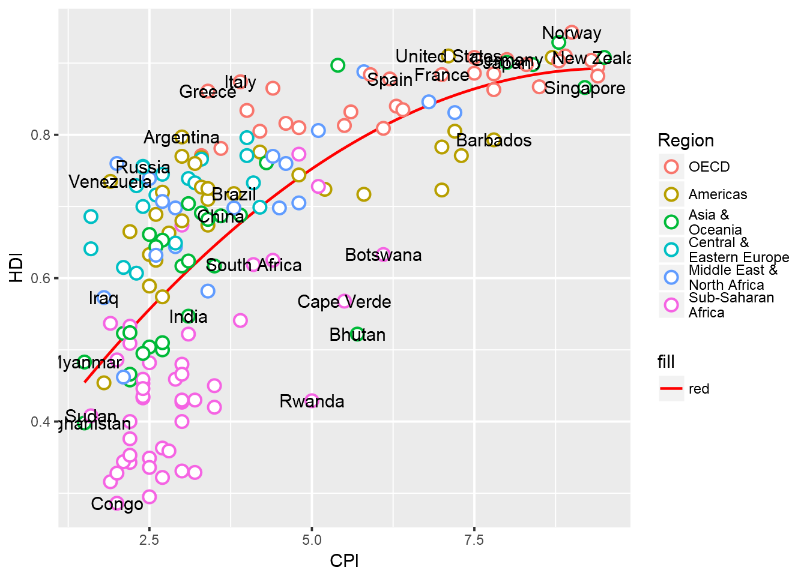
2.5 Custom Font
Custom font can be used for the labels by providing the font name to argument family like so geom_text(family="fontname"). If you do not want to bother with fonts, just avoid the family argument in geom_text and skip this part.
Using custom fonts can be tricky business. To use a font name, it must be installed on your system and it should be imported into the R environment. This can be done using the extrafont package. Try importing one of the fonts available on your system. Not all fonts work. extrafont prefers ‘.ttf’ fonts. If a font doesn’t work, try another.
library(extrafont)
font_import(pattern="Times",prompt=FALSE)
font_import(pattern="Trebuchet",prompt=FALSE)
# load fonts for pdf
loadfonts()
# list available fonts in R
fonts()The actual font used on the Economist graph is something close to ITC Officina Sans. Since this is not a free font, I am using a free font called Gidole.
p+geom_text(data=subset(ec,Country %in% labels),aes(label=Country),
color="black",family="Gidole")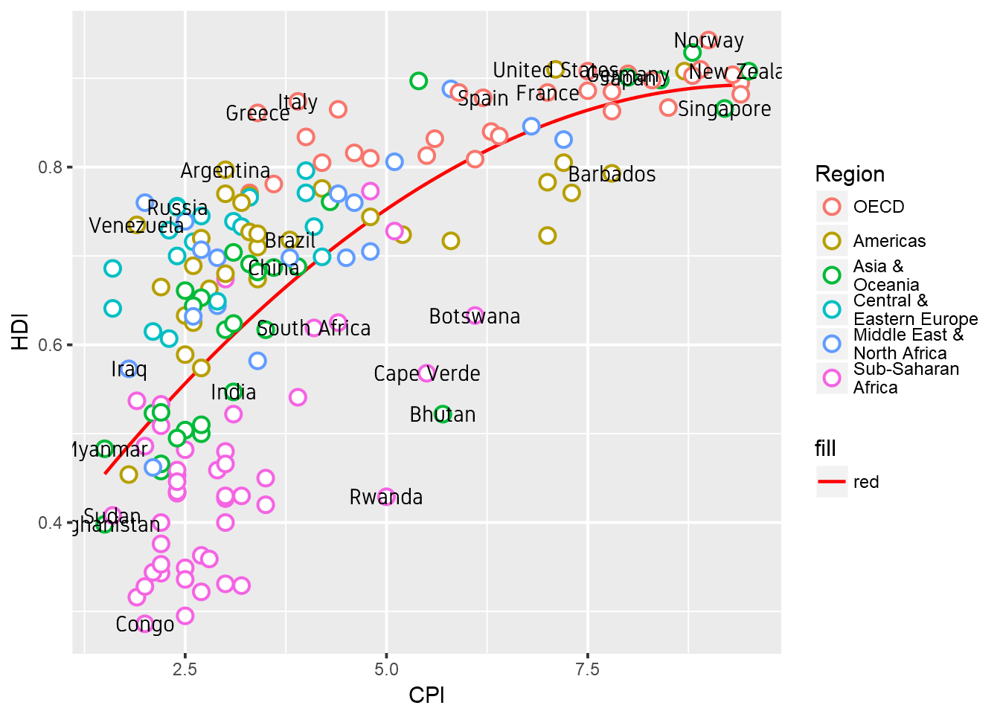
2.6 Label Overlap
To avoid overlapping of labels, we can use a ggplot2 extension package ggrepel. We can use function geom_text_repel() from the ggrepel package. geom_text_repel() has the same arguments/aesthetics as geom_text and a few more. Skip the family=Gidole part if you do not want to change the font.
library(ggrepel)
p <- p+geom_text_repel(data=subset(ec,Country %in% labels),aes(label=Country),
color="black",box.padding=unit(1,'lines'),segment.size=0.25,
size=3,family="Gidole")
p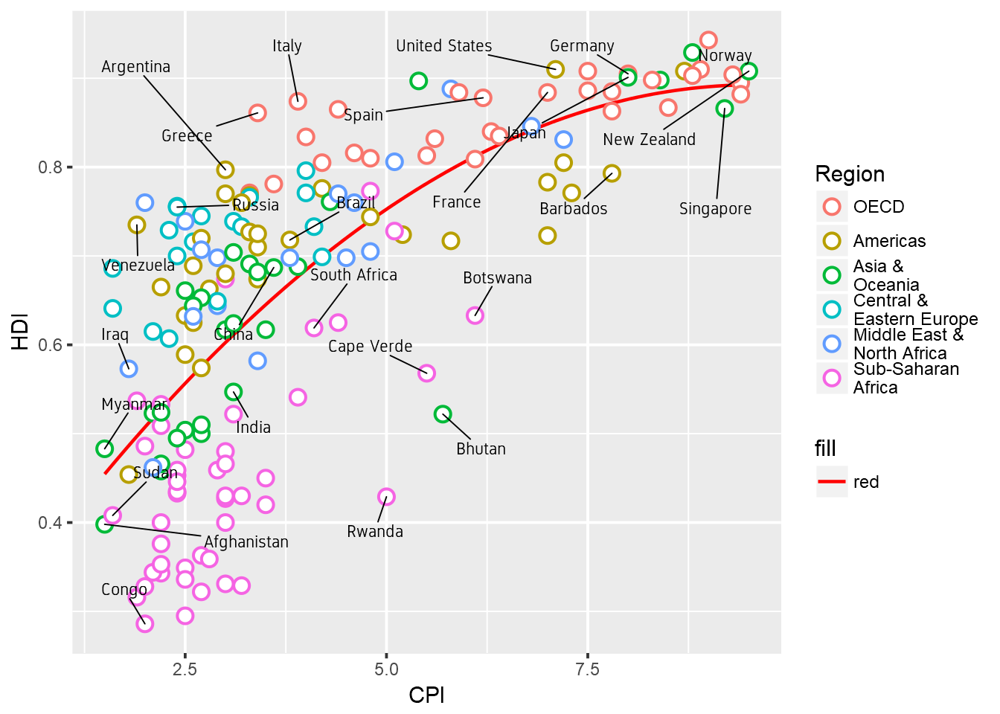
2.7 Axes
Next step is to adjust the axes breaks, axes labels, point colors and relabelling the trendline legend text. > Change axes labels to ‘Corruption Perceptions Index, 2011 (10=least corrupt)’ on the x-axis and ‘Human Development Index, 2011 (1=best)’ on the y-axis. Set breaks on the x-axis from 1 to 10 by 1 increment and y-axis from 0.2 to 1.0 by 0.1 increments.
p <- p+scale_x_continuous(name="Corruption Perceptions Index, 2011 (10=least corrupt)",
breaks=1:10,limits=c(1,10))+
scale_y_continuous(name="Human Development Index, 2011 (1=best)",
breaks=seq(from=0,to=1,by=0.1),limits=c(0.2,1))
p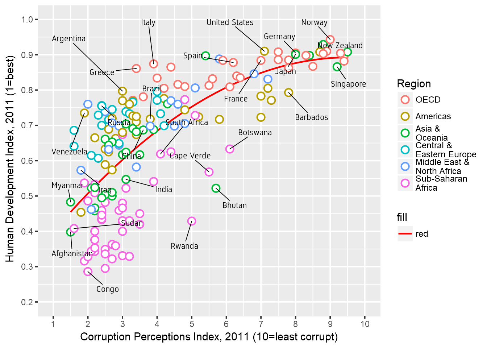
2.8 Scale Colors
Now we want to change the color palette for the points and modify the legend text for the trendline.
Use
scale_color_manual()to provide custom colors. These are the colors to use for the points:"#23576E","#099FDB","#29B00E", "#208F84","#F55840","#924F3E". Usescale_fill_manualto change the trendline label since it’s a fill scale. The legend entry for the trendline should read ‘R^2=52%’.
p <- p+scale_color_manual(values=c("#23576E","#099FDB","#29B00E", "#208F84","#F55840","#924F3E"))+
scale_fill_manual(name="trend",values="red",labels=expression(paste(R^2,"=52%")))
p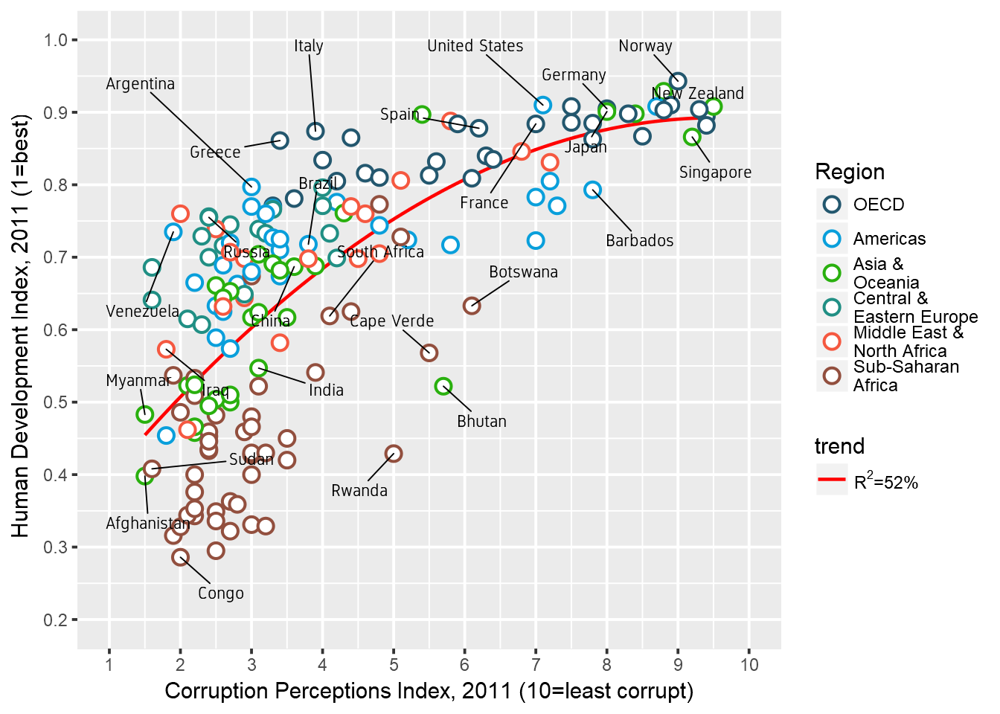
2.9 Title
Title and caption can be added with labs.
Set the title to ‘Corruption and human development’. Set the caption to ‘Sources: Transparency International; UN Human Development Report’.
p <- p+labs(title="Corruption and human development",
caption="Sources: Transparency International; UN Human Development Report")
p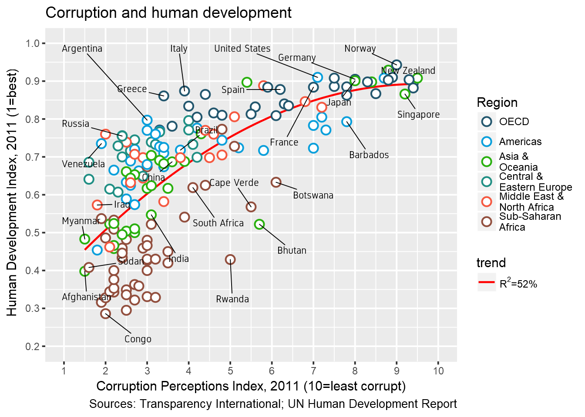
2.10 Theme
We want to move the legend to the top and as a single row. This can be done using theme() option legend.position. See ?theme. guides() is used to set the number of rows to 1. We also set a custom font for all text elements using base_family="Gidole". This can be skipped if a font change is not required.
p <- p+guides(color=guide_legend(nrow=1))+
theme_bw(base_family="Gidole")+
theme(legend.position="top")
p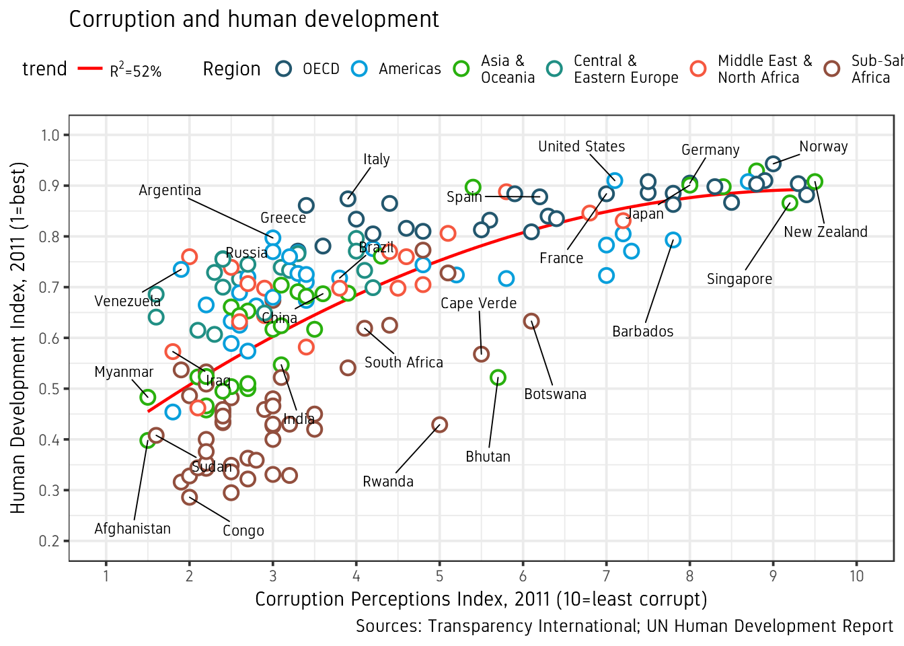
Now we do some careful refining with themes.
- Turn off minor gridlines
- Turn off major gridlines on x-axis
- Remove the grey background
- Remove panel border
- Remove legend titles
- Make axes titles italic
- Turn off y-axis ticks
- Change x-axis ticks to color grey60
- Make plot title bold
- Decrease size of caption to size 8
p+theme(panel.grid.minor=element_blank(),
panel.grid.major.x=element_blank(),
panel.background=element_blank(),
panel.border=element_blank(),
legend.title=element_blank(),
axis.title=element_text(face="italic"),
axis.ticks.y=element_blank(),
axis.ticks.x=element_line(color="grey60"),
plot.title=element_text(face="bold"),
plot.caption=element_text(hjust=0,size=8))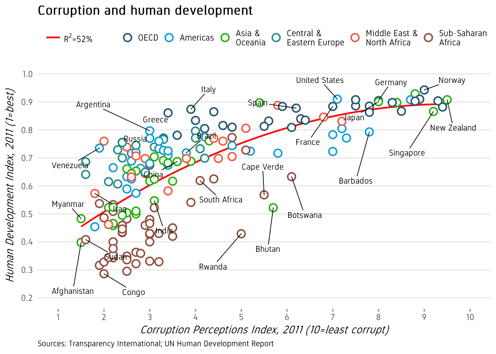
And now our plot is ready and we can compare with the original.
The full script for this challenge is summarised here:
# read data
ec <- read.csv("ggplot_lab_assets/data_economist.csv",header=T)
# refactor
ec$Region <- factor(ec$Region,
levels = c("EU W. Europe","Americas","Asia Pacific",
"East EU Cemt Asia","MENA","SSA"),
labels = c("OECD","Americas","Asia &\nOceania",
"Central &\nEastern Europe",
"Middle East &\nNorth Africa",
"Sub-Saharan\nAfrica"))
# labels
labels <- c("Congo","Afghanistan","Sudan","Myanmar","Iraq","Venezuela","Russia","Argentina","Brazil","Italy","South Africa","Cape Verde","Bhutan","Botswana","Britian","New Zealand","Greece","China","India","Rwanda","Spain","France","United States","Japan","Norway","Singapore","Barbados","Germany")
# plotting
p1 <- ggplot(ec,aes(x=CPI,y=HDI,color=Region))+
geom_smooth(aes(fill="red"),method="lm",formula=y~poly(x,2),se=F,color="red",size=0.6)+
geom_point(shape=21,size=3,stroke=0.8,fill="white")+
geom_text_repel(data=subset(ec,Country %in% labels),aes(label=Country),
color="black",box.padding=unit(1,'lines'),segment.size=0.25,
size=3,family="Gidole")+
scale_x_continuous(name="Corruption Perceptions Index, 2011 (10=least corrupt)",
breaks=1:10,limits=c(1,10))+
scale_y_continuous(name="Human Development Index, 2011 (1=best)",
breaks=seq(from=0,to=1,by=0.1),limits=c(0.2,1))+
scale_color_manual(values=c("#23576E","#099FDB","#29B00E", "#208F84","#F55840","#924F3E"))+
scale_fill_manual(name="trend",values="red",labels=expression(paste(R^2,"=52%")))+
labs(title="Corruption and human development",
caption="Sources: Transparency International; UN Human Development Report")+
guides(color=guide_legend(nrow=1))+
theme_bw(base_family="Gidole")+
theme(legend.position="top",
panel.grid.minor=element_blank(),
panel.grid.major.x=element_blank(),
panel.background=element_blank(),
panel.border=element_blank(),
legend.title=element_blank(),
axis.title=element_text(face="italic"),
axis.ticks.y=element_blank(),
axis.ticks.x=element_line(color="grey60"),
plot.title=element_text(face="bold"),
plot.caption=element_text(hjust=0,size=8))
p13 WSJ Heatmap
The aim of this challenge is to recreate the plot below originally published in The Wall Street Journal. The plot is a heatmap showing the normalised number of cases of measles across 51 US states from 1928 to 2003. X-axis shows years and y-axis shows the names of states. The color of the tiles denote the number of measles cases per 100,000 people. Introduction of the measles vaccine is shown as the black line in 1963.
3.1 Data
Start by reading in the data. This .csv file has two lines of comments so we need to skip 2 lines while reading in the data. We also add stringsAsFactors=F to avoid the automatic conversion of character fields to factor type.
me <- read.csv("ggplot_lab_assets/data_wsj.csv",header=T,stringsAsFactors=F,skip=2)
head(me)Check the data type for the fields.
str(me)## 'data.frame': 3952 obs. of 53 variables:
## $ YEAR : int 1928 1928 1928 1928 1928 1928 1928 1928 1928 1928 ...
## $ WEEK : int 1 2 3 4 5 6 7 8 9 10 ...
## $ ALABAMA : chr "3.67" "6.25" "7.95" "12.58" ...
## $ ALASKA : chr "-" "-" "-" "-" ...
## $ ARIZONA : chr "1.90" "6.40" "4.50" "1.90" ...
## $ ARKANSAS : chr "4.11" "9.91" "11.15" "13.75" ...
## $ CALIFORNIA : chr "1.38" "1.80" "1.31" "1.87" ...
## $ COLORADO : chr "8.38" "6.02" "2.86" "13.71" ...
## $ CONNECTICUT : chr "4.50" "9.00" "8.81" "10.40" ...
## $ DELAWARE : chr "8.58" "7.30" "15.88" "4.29" ...
## $ DISTRICT.OF.COLUMBIA: chr "-" "-" "-" "4.18" ...
## $ FLORIDA : chr "0.21" "0.49" "0.42" "0.91" ...
## $ GEORGIA : chr "1.17" "5.96" "-" "8.65" ...
## $ HAWAII : chr "-" "-" "-" "-" ...
## $ IDAHO : chr "-" "0.45" "0.45" "-" ...
## $ ILLINOIS : chr "0.50" "0.77" "0.61" "0.81" ...
## $ INDIANA : chr "1.34" "2.71" "1.71" "4.11" ...
## $ IOWA : chr "0.16" "-" "-" "3.51" ...
## $ KANSAS : chr "0.81" "1.35" "1.41" "1.14" ...
## $ KENTUCKY : chr "3.08" "1.99" "5.26" "5.49" ...
## $ LOUISIANA : chr "1.89" "3.00" "2.33" "4.02" ...
## $ MAINE : chr "4.52" "7.40" "6.78" "9.41" ...
## $ MARYLAND : chr "10.87" "15.47" "21.43" "22.67" ...
## $ MASSACHUSETTS : chr "25.66" "28.50" "34.76" "31.28" ...
## $ MICHIGAN : chr "5.68" "7.59" "9.39" "8.66" ...
## $ MINNESOTA : chr "0.31" "0.23" "0.15" "0.12" ...
## $ MISSISSIPPI : chr "-" "-" "-" "-" ...
## $ MISSOURI : chr "1.19" "0.83" "1.69" "1.58" ...
## $ MONTANA : chr "0.18" "0.18" "0.74" "-" ...
## $ NEBRASKA : chr "1.60" "0.29" "0.36" "0.44" ...
## $ NEVADA : chr "-" "-" "-" "-" ...
## $ NEW.HAMPSHIRE : chr "-" "-" "-" "14.53" ...
## $ NEW.JERSEY : chr "3.55" "4.74" "6.68" "6.78" ...
## $ NEW.MEXICO : chr "14.90" "11.06" "14.90" "27.64" ...
## $ NEW.YORK : chr "7.60" "9.65" "8.54" "9.32" ...
## $ NORTH.CAROLINA : chr "47.86" "119.70" "110.90" "131.60" ...
## $ NORTH.DAKOTA : chr "-" "0.15" "1.20" "3.91" ...
## $ OHIO : chr "2.51" "-" "4.86" "4.40" ...
## $ OKLAHOMA : chr "4.86" "2.56" "6.27" "4.74" ...
## $ OREGON : chr "4.91" "4.91" "3.63" "2.24" ...
## $ PENNSYLVANIA : chr "6.97" "8.74" "8.12" "8.39" ...
## $ RHODE.ISLAND : chr "1.18" "0.74" "2.65" "0.15" ...
## $ SOUTH.CAROLINA : chr "42.04" "83.90" "77.46" "64.75" ...
## $ SOUTH.DAKOTA : chr "5.69" "6.57" "2.04" "2.19" ...
## $ TENNESSEE : chr "22.03" "16.96" "24.66" "18.86" ...
## $ TEXAS : chr "1.18" "0.63" "0.62" "0.37" ...
## $ UTAH : chr "0.40" "-" "0.20" "0.20" ...
## $ VERMONT : chr "0.28" "0.56" "1.12" "6.70" ...
## $ VIRGINIA : chr "-" "-" "-" "-" ...
## $ WASHINGTON : chr "14.83" "17.34" "15.67" "12.77" ...
## $ WEST.VIRGINIA : chr "3.36" "4.19" "4.19" "4.66" ...
## $ WISCONSIN : chr "1.54" "0.96" "4.79" "1.64" ...
## $ WYOMING : chr "0.91" "-" "1.36" "3.64" ...Looking at this dataset, there is going to be quite a bit of data clean-up and tidying before we can plot it. Here are the steps we need to take:
- The data needs to be transformed to long format.
- Replace all “-” with NAs
- The number of cases across each state is a character and needs to be converted to numeric
- Collapse (sum) week-level data to year.
- Abbreviate state names
3.2 Tidy Data
Convert the wide format to long format using the function gather() from package dplyr.
me1 <- me %>% gather(key=state,value=value,-YEAR,-WEEK)
head(me1)Now, replace all ‘-’ with NA in the field value. We use the function str_replace() from R package stringr. Then convert the value field to numeric.
me2 <- me1 %>% mutate(value=str_replace(value,"^-$",NA_character_),
value=as.numeric(value))
head(me2)Sum up the week-level information to year-level information. This means rather than having
YEAR WEEK state value
1 1928 1 ALABAMA 3.67
2 1928 2 ALABAMA 6.25
3 1928 3 ALABAMA 7.95
...
5501 1957 41 ALASKA 2.16
5502 1957 42 ALASKA 0.43
5503 1957 43 ALASKA 1.30
...we should have one value per year per state.
YEAR state value
1 1928 ALABAMA 3.67
2 1929 ALABAMA 3.20
...
5501 1957 ALASKA 2.16
5502 1958 ALASKA 2.05
...The solution is to sum up all the cases for a state for all weeks within a year into one value for that year. This can be done using the summarise() function from package dplyr.
- A custom function is used to sum over weeks. If all values are NA, then result is NA. If some values are NA, the NAs are removed and the remaining numbers are summed.
- The dots in state names are replaced by spaces and the words are converted to title case (First letter capital and rest lowercase).
- We also convert the column names to lowercase for consistency.
fun1 <- function(x) ifelse(all(is.na(x)),NA,sum(x,na.rm=TRUE))
me3 <- me2 %>% group_by(YEAR,state) %>%
summarise(total=fun1(value)) %>%
mutate(state=str_replace_all(state,"[.]"," "),
state=str_to_title(state))
colnames(me3) <- tolower(colnames(me3))
head(me3)str(me3)## Classes 'grouped_df', 'tbl_df', 'tbl' and 'data.frame': 3876 obs. of 3 variables:
## $ year : int 1928 1928 1928 1928 1928 1928 1928 1928 1928 1928 ...
## $ state: chr "Alabama" "Alaska" "Arizona" "Arkansas" ...
## $ total: num 335 NA 200.8 481.8 69.2 ...
## - attr(*, "vars")= chr "YEAR"
## - attr(*, "labels")='data.frame': 76 obs. of 1 variable:
## ..$ YEAR: int 1928 1929 1930 1931 1932 1933 1934 1935 1936 1937 ...
## ..- attr(*, "vars")= chr "YEAR"
## ..- attr(*, "drop")= logi TRUE
## - attr(*, "indices")=List of 76
## ..$ : int 0 1 2 3 4 5 6 7 8 9 ...
## ..$ : int 51 52 53 54 55 56 57 58 59 60 ...
## ..$ : int 102 103 104 105 106 107 108 109 110 111 ...
## ..$ : int 153 154 155 156 157 158 159 160 161 162 ...
## ..$ : int 204 205 206 207 208 209 210 211 212 213 ...
## ..$ : int 255 256 257 258 259 260 261 262 263 264 ...
## ..$ : int 306 307 308 309 310 311 312 313 314 315 ...
## ..$ : int 357 358 359 360 361 362 363 364 365 366 ...
## ..$ : int 408 409 410 411 412 413 414 415 416 417 ...
## ..$ : int 459 460 461 462 463 464 465 466 467 468 ...
## ..$ : int 510 511 512 513 514 515 516 517 518 519 ...
## ..$ : int 561 562 563 564 565 566 567 568 569 570 ...
## ..$ : int 612 613 614 615 616 617 618 619 620 621 ...
## ..$ : int 663 664 665 666 667 668 669 670 671 672 ...
## ..$ : int 714 715 716 717 718 719 720 721 722 723 ...
## ..$ : int 765 766 767 768 769 770 771 772 773 774 ...
## ..$ : int 816 817 818 819 820 821 822 823 824 825 ...
## ..$ : int 867 868 869 870 871 872 873 874 875 876 ...
## ..$ : int 918 919 920 921 922 923 924 925 926 927 ...
## ..$ : int 969 970 971 972 973 974 975 976 977 978 ...
## ..$ : int 1020 1021 1022 1023 1024 1025 1026 1027 1028 1029 ...
## ..$ : int 1071 1072 1073 1074 1075 1076 1077 1078 1079 1080 ...
## ..$ : int 1122 1123 1124 1125 1126 1127 1128 1129 1130 1131 ...
## ..$ : int 1173 1174 1175 1176 1177 1178 1179 1180 1181 1182 ...
## ..$ : int 1224 1225 1226 1227 1228 1229 1230 1231 1232 1233 ...
## ..$ : int 1275 1276 1277 1278 1279 1280 1281 1282 1283 1284 ...
## ..$ : int 1326 1327 1328 1329 1330 1331 1332 1333 1334 1335 ...
## ..$ : int 1377 1378 1379 1380 1381 1382 1383 1384 1385 1386 ...
## ..$ : int 1428 1429 1430 1431 1432 1433 1434 1435 1436 1437 ...
## ..$ : int 1479 1480 1481 1482 1483 1484 1485 1486 1487 1488 ...
## ..$ : int 1530 1531 1532 1533 1534 1535 1536 1537 1538 1539 ...
## ..$ : int 1581 1582 1583 1584 1585 1586 1587 1588 1589 1590 ...
## ..$ : int 1632 1633 1634 1635 1636 1637 1638 1639 1640 1641 ...
## ..$ : int 1683 1684 1685 1686 1687 1688 1689 1690 1691 1692 ...
## ..$ : int 1734 1735 1736 1737 1738 1739 1740 1741 1742 1743 ...
## ..$ : int 1785 1786 1787 1788 1789 1790 1791 1792 1793 1794 ...
## ..$ : int 1836 1837 1838 1839 1840 1841 1842 1843 1844 1845 ...
## ..$ : int 1887 1888 1889 1890 1891 1892 1893 1894 1895 1896 ...
## ..$ : int 1938 1939 1940 1941 1942 1943 1944 1945 1946 1947 ...
## ..$ : int 1989 1990 1991 1992 1993 1994 1995 1996 1997 1998 ...
## ..$ : int 2040 2041 2042 2043 2044 2045 2046 2047 2048 2049 ...
## ..$ : int 2091 2092 2093 2094 2095 2096 2097 2098 2099 2100 ...
## ..$ : int 2142 2143 2144 2145 2146 2147 2148 2149 2150 2151 ...
## ..$ : int 2193 2194 2195 2196 2197 2198 2199 2200 2201 2202 ...
## ..$ : int 2244 2245 2246 2247 2248 2249 2250 2251 2252 2253 ...
## ..$ : int 2295 2296 2297 2298 2299 2300 2301 2302 2303 2304 ...
## ..$ : int 2346 2347 2348 2349 2350 2351 2352 2353 2354 2355 ...
## ..$ : int 2397 2398 2399 2400 2401 2402 2403 2404 2405 2406 ...
## ..$ : int 2448 2449 2450 2451 2452 2453 2454 2455 2456 2457 ...
## ..$ : int 2499 2500 2501 2502 2503 2504 2505 2506 2507 2508 ...
## ..$ : int 2550 2551 2552 2553 2554 2555 2556 2557 2558 2559 ...
## ..$ : int 2601 2602 2603 2604 2605 2606 2607 2608 2609 2610 ...
## ..$ : int 2652 2653 2654 2655 2656 2657 2658 2659 2660 2661 ...
## ..$ : int 2703 2704 2705 2706 2707 2708 2709 2710 2711 2712 ...
## ..$ : int 2754 2755 2756 2757 2758 2759 2760 2761 2762 2763 ...
## ..$ : int 2805 2806 2807 2808 2809 2810 2811 2812 2813 2814 ...
## ..$ : int 2856 2857 2858 2859 2860 2861 2862 2863 2864 2865 ...
## ..$ : int 2907 2908 2909 2910 2911 2912 2913 2914 2915 2916 ...
## ..$ : int 2958 2959 2960 2961 2962 2963 2964 2965 2966 2967 ...
## ..$ : int 3009 3010 3011 3012 3013 3014 3015 3016 3017 3018 ...
## ..$ : int 3060 3061 3062 3063 3064 3065 3066 3067 3068 3069 ...
## ..$ : int 3111 3112 3113 3114 3115 3116 3117 3118 3119 3120 ...
## ..$ : int 3162 3163 3164 3165 3166 3167 3168 3169 3170 3171 ...
## ..$ : int 3213 3214 3215 3216 3217 3218 3219 3220 3221 3222 ...
## ..$ : int 3264 3265 3266 3267 3268 3269 3270 3271 3272 3273 ...
## ..$ : int 3315 3316 3317 3318 3319 3320 3321 3322 3323 3324 ...
## ..$ : int 3366 3367 3368 3369 3370 3371 3372 3373 3374 3375 ...
## ..$ : int 3417 3418 3419 3420 3421 3422 3423 3424 3425 3426 ...
## ..$ : int 3468 3469 3470 3471 3472 3473 3474 3475 3476 3477 ...
## ..$ : int 3519 3520 3521 3522 3523 3524 3525 3526 3527 3528 ...
## ..$ : int 3570 3571 3572 3573 3574 3575 3576 3577 3578 3579 ...
## ..$ : int 3621 3622 3623 3624 3625 3626 3627 3628 3629 3630 ...
## ..$ : int 3672 3673 3674 3675 3676 3677 3678 3679 3680 3681 ...
## ..$ : int 3723 3724 3725 3726 3727 3728 3729 3730 3731 3732 ...
## ..$ : int 3774 3775 3776 3777 3778 3779 3780 3781 3782 3783 ...
## ..$ : int 3825 3826 3827 3828 3829 3830 3831 3832 3833 3834 ...
## - attr(*, "drop")= logi TRUE
## - attr(*, "group_sizes")= int 51 51 51 51 51 51 51 51 51 51 ...
## - attr(*, "biggest_group_size")= int 51The data is now ready for plotting.
3.3 Tile
We can build up a basic ggplot and heatmap tiles can be plotted using the geom geom_tile. ‘year’ is mapped to the x-axis, ‘state’ to the y-axis and fill color for the tiles is the ‘total’ value.
ggplot(me3,aes(x=year,y=state,fill=total))+
geom_tile()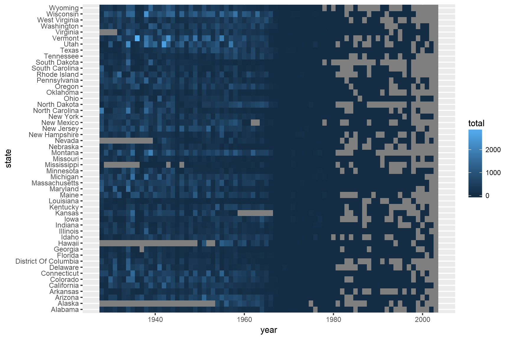
Add borders around the tiles. We use reorder(state,desc(state)) to reverse the order of states so that it reads A-Z from top to bottom.
p <- ggplot(me3,aes(x=year,y=reorder(state,desc(state)),fill=total))+
geom_tile(color="white",size=0.25)
p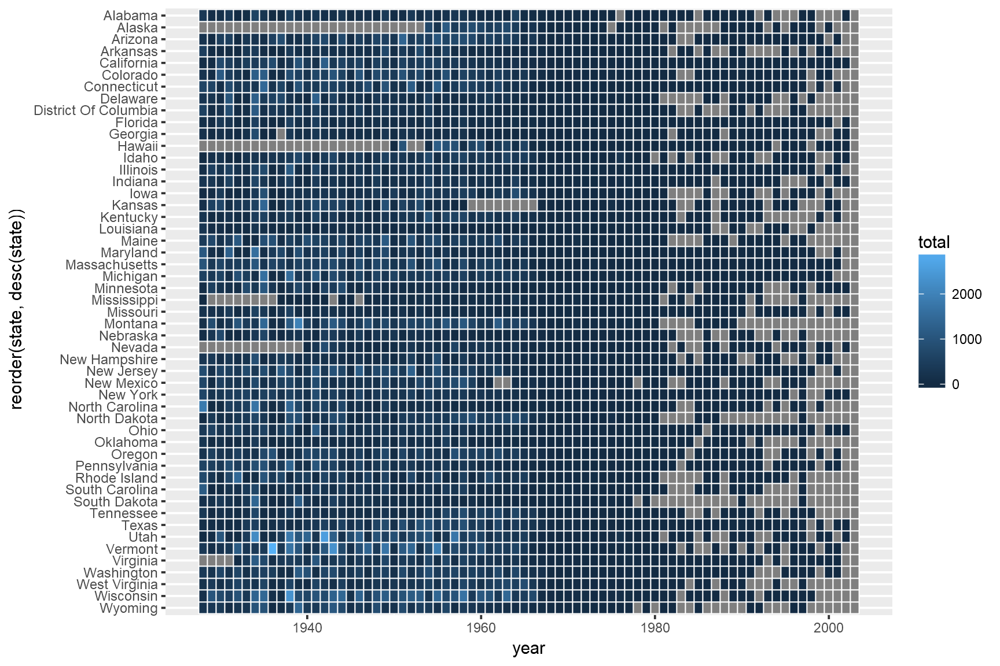
3.4 Scales
The extra space on left and right (grey) of the plot is removed using argument expand in scales. X-axis breaks are redefined at 10 year intervals from 1930 to 2010. Custom colors are used for the tiles: "#e7f0fa","#c9e2f6","#95cbee","#0099dc","#4ab04a", "#ffd73e","#eec73a","#e29421","#f05336","#ce472e". Since the color scale is a fill color on a continuous value and we want to supply n new colors, we use scale_fill_gradientn. Tiles with missing value is set to the color "grey90".
cols <- c("#e7f0fa","#c9e2f6","#95cbee","#0099dc","#4ab04a", "#ffd73e","#eec73a","#e29421","#f05336","#ce472e")
p + scale_y_discrete(expand=c(0,0))+
scale_x_continuous(expand=c(0,0),breaks=seq(1930,2010,by=10))+
scale_fill_gradientn(colors=cols,na.value="grey95")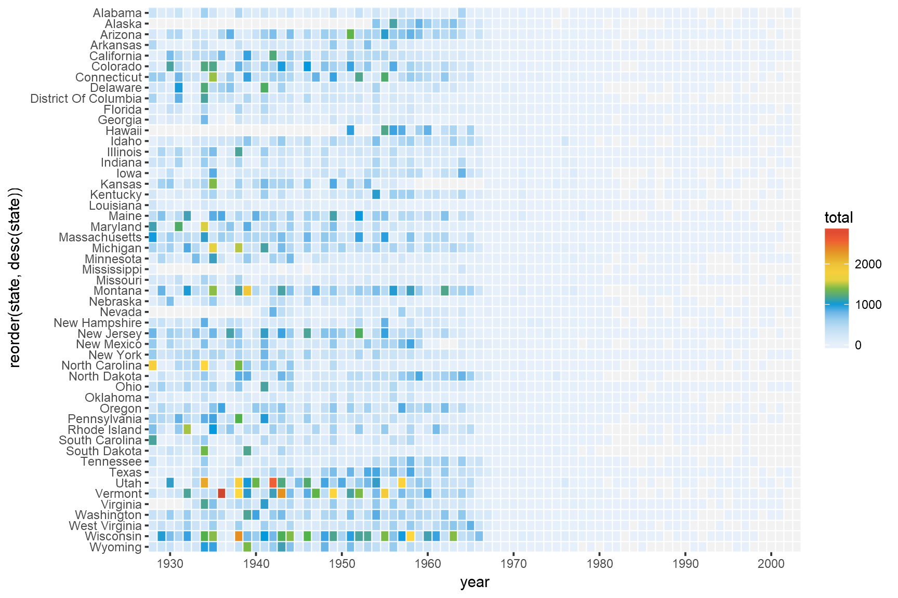
The fill scale can be further refined to resemble that of the original plot.
cols <- c("#e7f0fa","#c9e2f6","#95cbee","#0099dc","#4ab04a", "#ffd73e","#eec73a","#e29421","#f05336","#ce472e")
p <- p+ scale_y_discrete(expand=c(0,0))+
scale_x_continuous(expand=c(0,0),breaks=seq(1930,2010,by=10))+
scale_fill_gradientn(colors=cols,na.value="grey95",
limits=c(0,4000),
values=c(0,0.01,0.02,0.03,0.09,0.1,0.15,0.25,0.4,0.5,1),
labels=c("0k","1k","2k","3k","4k"),
guide=guide_colourbar(ticks=T,nbin=50,
barheight=.5,label=T,
barwidth=10))
p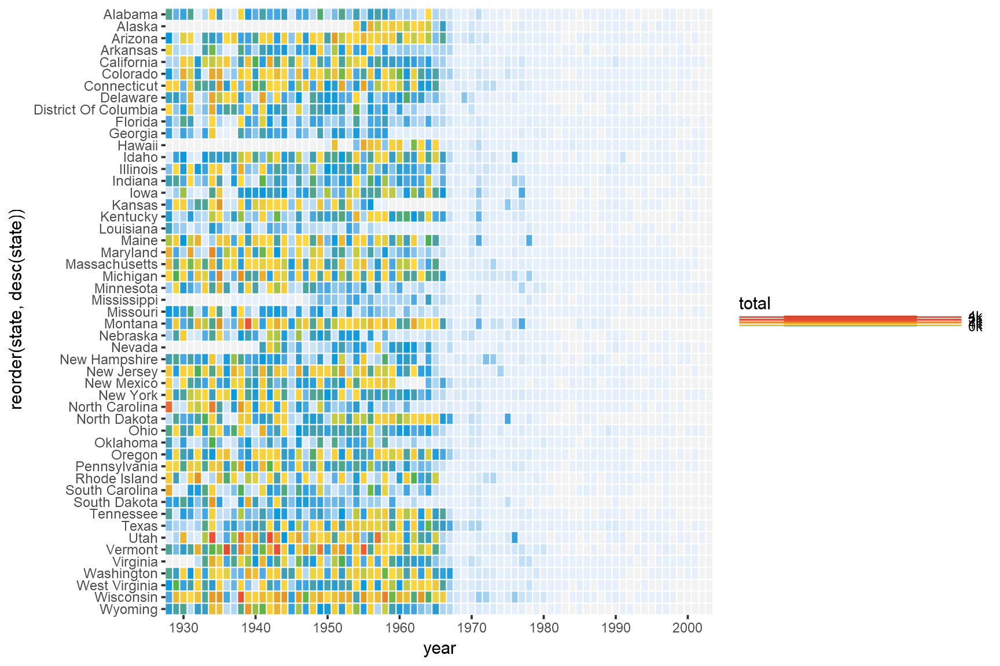
3.5 Title
We can remove the x and y axes titles and add a plot title.
p <- p+labs(x="",y="",fill="",title="Measles")
p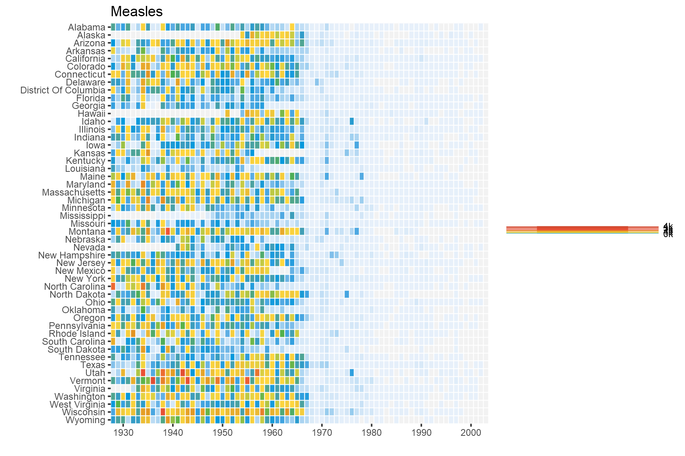
3.6 Fixed Coords
We can use coord_fixed() to fix the coordinates for equal values in x and y direction. This should render perfectly square tiles.
p <- p+coord_fixed()
p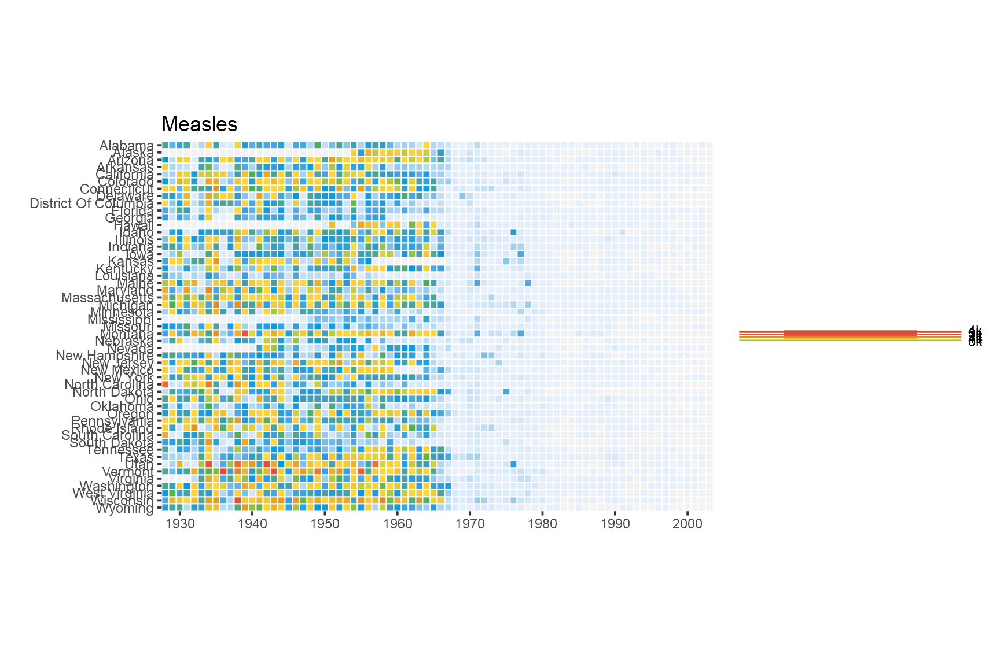
3.7 Annotation
Add the annotation line and text to denote the introduction of the vaccine. The line is at the position 1963. Custom font ‘Gidole’ is used here. This can be skipped.
p <- p+geom_segment(x=1963,xend=1963,y=0,yend=51.5,size=.6,alpha=0.7) +
annotate("text",label="Vaccine introduced",x=1963,y=53,
vjust=1,hjust=0,size=I(3),family="Gidole")
p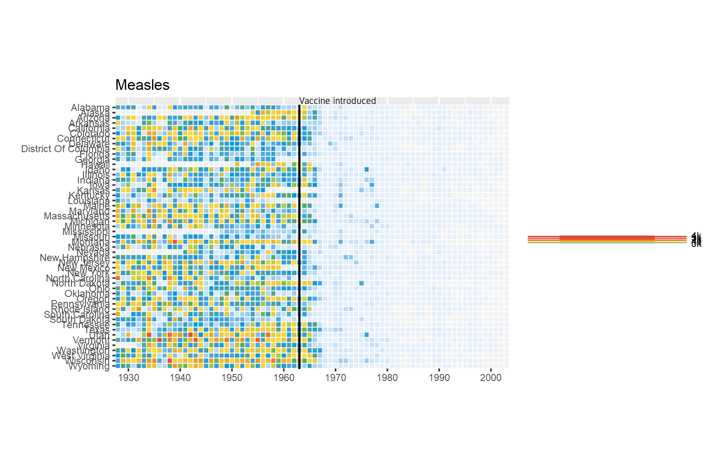
3.8 Theme
Here we change the following aspects of the plot using theme:
- Change theme to
theme_minimalto remove unnecessary plot elements.- Use custom font. See ‘Custom font’ section under ‘Economist Scatterplot’.
- Position the legend to bottom center.
- Set legend font to color grey20.
- Adjust size and justification of x and y axes text
- Adjust title justification
- Remove all gridlines
p+theme_minimal(base_family="Gidole")+
theme(legend.position="bottom",
legend.justification="center",
legend.direction="horizontal",
legend.text=element_text(color="grey20"),
axis.text.y=element_text(size=6,hjust=1,vjust=0.5),
axis.text.x=element_text(size=8),
axis.ticks.y=element_blank(),
title=element_text(hjust=-.07,vjust=1),
panel.grid=element_blank())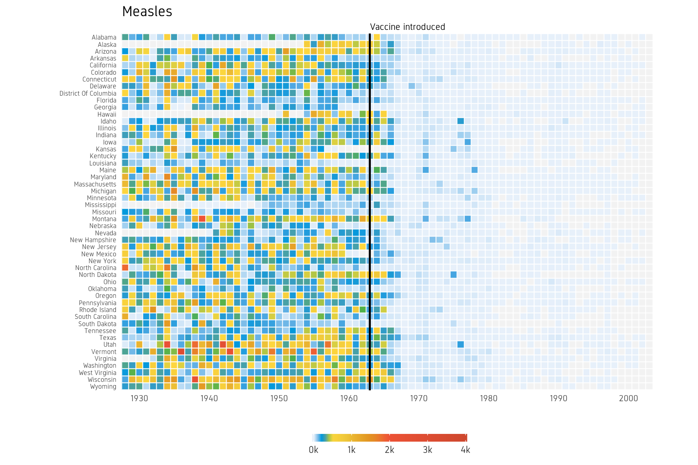
Our plot is ready and we can compare it to the original version.
The full code for this challenge is here:
# read data
me <- read.csv("ggplot_lab_assets/data_wsj.csv",header=T,stringsAsFactors=F,skip=2)
# custom summing function
fun1 <- function(x) ifelse(all(is.na(x)),NA,sum(x,na.rm=TRUE))
# tidy data
me1 <- me %>% gather(key=state,value=value,-YEAR,-WEEK)
me2 <- me1 %>% mutate(value=str_replace(value,"^-$",NA_character_),
value=as.numeric(value))
me3 <- me2 %>% group_by(YEAR,state) %>%
summarise(total=fun1(value)) %>%
mutate(state=str_replace_all(state,"[.]"," "),
state=str_to_title(state))
colnames(me3) <- tolower(colnames(me3))
# custom colors
cols <- c("#e7f0fa","#c9e2f6","#95cbee","#0099dc","#4ab04a", "#ffd73e","#eec73a","#e29421","#f05336","#ce472e")
# plotting
p <- ggplot(me3,aes(x=year,y=reorder(state,desc(state)),fill=total))+
geom_tile(color="white",size=0.25)+
scale_y_discrete(expand=c(0,0))+
scale_x_continuous(expand=c(0,0),breaks=seq(1930,2010,by=10))+
scale_fill_gradientn(colors=cols,na.value="grey95",
limits=c(0,4000),
values=c(0,0.01,0.02,0.03,0.09,0.1,0.15,0.25,0.4,0.5,1),
labels=c("0k","1k","2k","3k","4k"),
guide=guide_colourbar(ticks=T,nbin=50,
barheight=.5,label=T,
barwidth=10))+
labs(x="",y="",fill="",title="Measles")+
coord_fixed()+
geom_segment(x=1963,xend=1963,y=0,yend=51.5,size=.9) +
annotate("text",label="Vaccine introduced",x=1963,y=53,
vjust=1,hjust=0,size=I(3),family="Gidole")+
theme_minimal(base_family="Gidole")+
theme(legend.position=c(.5,-.13),
legend.direction="horizontal",
legend.text=element_text(color="grey20"),
plot.margin=grid::unit(c(.5,0,1.5,0),"cm"),
axis.text.y=element_text(size=6,hjust=1,vjust=0.5),
axis.text.x=element_text(size=8),
axis.ticks.y=element_blank(),
panel.grid=element_blank(),
title=element_text(hjust=-.07,vjust=1),
panel.grid=element_blank())4 Session Info
- This document has been created in RStudio using R Markdown and related packages.
- For R Markdown, see http://rmarkdown.rstudio.com
- For details about the OS, packages and versions, see detailed information below:
sessionInfo()## R version 3.4.3 (2017-11-30)
## Platform: x86_64-w64-mingw32/x64 (64-bit)
## Running under: Windows >= 8 x64 (build 9200)
##
## Matrix products: default
##
## locale:
## [1] LC_COLLATE=English_United Kingdom.1252
## [2] LC_CTYPE=English_United Kingdom.1252
## [3] LC_MONETARY=English_United Kingdom.1252
## [4] LC_NUMERIC=C
## [5] LC_TIME=English_United Kingdom.1252
##
## attached base packages:
## [1] stats graphics grDevices utils datasets methods base
##
## other attached packages:
## [1] ggrepel_0.7.0 captioner_2.2.3 bookdown_0.7 knitr_1.20
## [5] kableExtra_0.7.0 DT_0.4 markdown_0.8 rmarkdown_1.9
## [9] extrafont_0.17 magrittr_1.5 bindrcpp_0.2 forcats_0.3.0
## [13] stringr_1.3.0 dplyr_0.7.4 purrr_0.2.4 readr_1.1.1
## [17] tidyr_0.8.1 tibble_1.4.2 ggplot2_2.2.1 tidyverse_1.2.1
##
## loaded via a namespace (and not attached):
## [1] httr_1.3.1 viridisLite_0.3.0 jsonlite_1.5
## [4] splines_3.4.3 modelr_0.1.1 microbenchmark_1.4-4
## [7] shiny_1.0.5 assertthat_0.2.0 cellranger_1.1.0
## [10] yaml_2.1.19 Rttf2pt1_1.3.6 pillar_1.2.2
## [13] backports_1.1.2 lattice_0.20-35 glue_1.2.0
## [16] extrafontdb_1.0 digest_0.6.15 promises_1.0.1
## [19] rvest_0.3.2 colorspace_1.3-2 sandwich_2.4-0
## [22] htmltools_0.3.6 httpuv_1.4.1 Matrix_1.2-14
## [25] plyr_1.8.4 psych_1.8.3.3 pkgconfig_2.0.1
## [28] broom_0.4.4 haven_1.1.1 xtable_1.8-2
## [31] mvtnorm_1.0-7 scales_0.5.0.9000 later_0.7.2
## [34] TH.data_1.0-8 lazyeval_0.2.1 cli_1.0.0
## [37] mnormt_1.5-5 mime_0.5 survival_2.42-3
## [40] crayon_1.3.4 readxl_1.1.0 evaluate_0.10.1
## [43] nlme_3.1-137 MASS_7.3-50 xml2_1.2.0
## [46] foreign_0.8-70 Cairo_1.5-9 tools_3.4.3
## [49] hms_0.4.2 multcomp_1.4-8 munsell_0.4.3
## [52] compiler_3.4.3 rlang_0.2.0 grid_3.4.3
## [55] rstudioapi_0.7 htmlwidgets_1.2 crosstalk_1.0.0
## [58] labeling_0.3 gtable_0.2.0 codetools_0.2-15
## [61] reshape2_1.4.3 R6_2.2.2 zoo_1.8-1
## [64] lubridate_1.7.4 utf8_1.1.3 bindr_0.1.1
## [67] rprojroot_1.3-2 stringi_1.1.7 parallel_3.4.3
## [70] Rcpp_0.12.16 tidyselect_0.2.4 xfun_0.1Page built on: 13-Jun-2018 at 15:49:31.
2018 | SciLifeLab > NBIS > RaukR